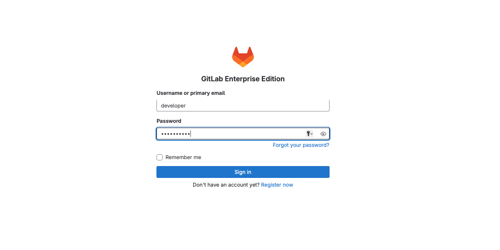
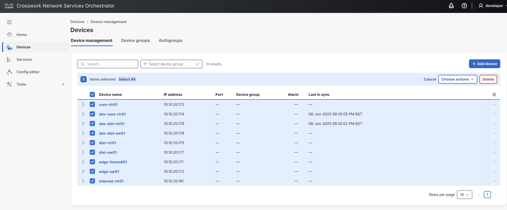

Workshop Access & Login
Verification
- Access GitLab: All the bookmarks for this sessions are available in Google Chrome, select DEVWKS-2618 Bookmark folder and Web IDE. (You can also navigate to http://devtools-gitlab.lab.devnetsandbox.local to access the GitLab UI.) Log in with username
developerand passwordC1sco12345.

Examine NSO Deployment
In the Sandbox, there are three different instances of Cisco Network Services Orchestrator (NSO). These instances have been pre-provisioned with the necessary Network Element Drivers (NEDs) and configured to manage the devices in the lab topology.
For the purpose of this workshop, we will focus on two specific NSO environments:
Development NSO: 10.10.20.47
Production NSO: 10.10.20.48
The Development NSO environment (10.10.20.47) is used to simulate a testing environment where we can validate our changes before deploying them to the production environment. This ensures that any modifications are thoroughly tested and verified, reducing the risk of issues in the Production NSO environment (10.10.20.48).
Log into NSO
Launch an SSH session to the Dev NSO instance (10.10.20.47) and log in using username developer and password C1sco12345.
Access the NSO shell
Use the ncs_cli command to access the NSO command shell. The command prompt will change to admin@ncs#.
Display the devices
The show devices command displays the devices in the sandbox topology that were provisioned in NSO during lab setup. We will be working with the Core and Distribution routers in this workshop. However, you can experiment with the other devices if you want.
Expected output:
NAME ADDRESS DESCRIPTION NED ID
----------------------------------------------------------------
core-rtr01 10.10.20.173 - cisco-iosxr-cli-7.65
dev-core-rtr01 10.10.20.174 - cisco-iosxr-cli-7.65
dev-dist-rtr01 10.10.20.176 - cisco-ios-cli-6.109
dev-dist-sw01 10.10.20.178 - cisco-nx-cli-5.27
dist-rtr01 10.10.20.175 - cisco-ios-cli-6.109
dist-sw01 10.10.20.177 - cisco-nx-cli-5.27
edge-firewall01 10.10.20.171 - cisco-asa-cli-6.18
edge-sw01 10.10.20.172 - cisco-ios-cli-6.109
internet-rtr01 10.10.20.181 - cisco-ios-cli-6.109
View devices in the NSO GUI
Select the NSO bookmark in Google Chrome or navigate to http://10.10.20.47:8080/ Log in using the username developer and password C1sco12345.
- Navigate to the Device Manager tab to view the devices.
- Ensure all devices are operational and correctly onboarded to NSO: select each device and run the Connect action.

If all steps are executed correctly, you will have completed the verification of your working environment.